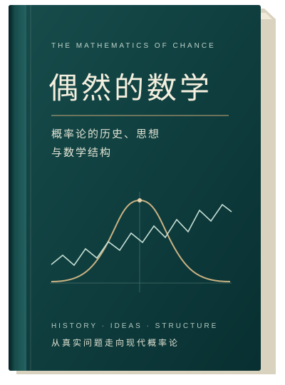

The Mathematics
of Chance
The history, ideas and mathematical
structures of probability
The Mathematics of Chance
From an interrupted game to random paths: follow the problems that made new mathematical ideas necessary, with sustained arguments, counterexamples and proofs.
8 long-form chapters · Work in progress
Complete English translations of all eight chapters and their proof materials. A working translation for author review, with the Chinese manuscripts preserved independently.
Read the book
Each chapter opens its complete English text. Switch between section and full-chapter reading at any time.
01An Unfinished GameFairness, symmetry, independence and additivity, beginning with an interrupted game.02From Chance to Knowledge: Learning an Unknown ProbabilityFrequencies, Bernoulli, Bayes and the problem of inference.03The Birth of the Bell Curvede Moivre, Laplace, Gauss and the emergence of Gaussian limits.04Randomness Enters Time: From Random Walks to Brownian MotionSquare-root scaling, joint distributions, covariance and the question of a random path.05The Price of Infinity: Why Probability Needs Measure TheoryFrom the difficulties of infinite sets to sigma-algebras, outer measures and probability.06The Rebirth of the Mean: From Weighted Sums to Lebesgue IntegrationIntegration, expectation and the conditions for exchanging a limit with an integral.07What Does Convergence Mean? Four Limits in a Random WorldRare recurring events, moving windows, spikes and uniform integrability.08How Can We Construct an Infinite Random Experiment?Consistent finite-dimensional rules, measure extension and a common space of records.About this reading edition
All eight chapters, advanced modules, supplementary proofs, references and writing guidance have full English working translations. The Chinese manuscripts remain unchanged. Translations await author review and do not change the independent mathematical or historical review states.
This is a local preview. The published edition has not been replaced.